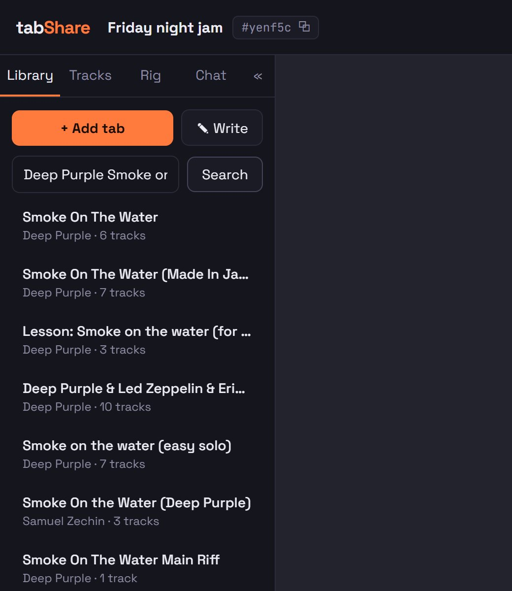
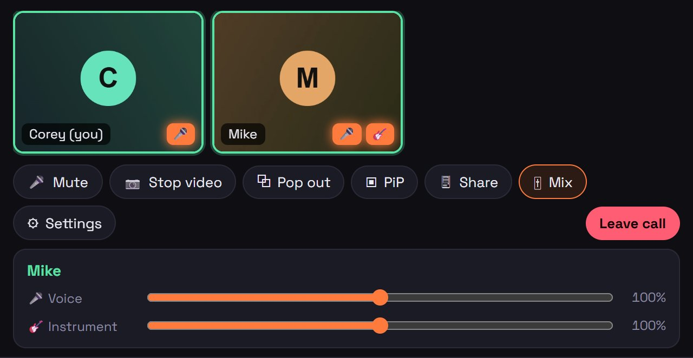
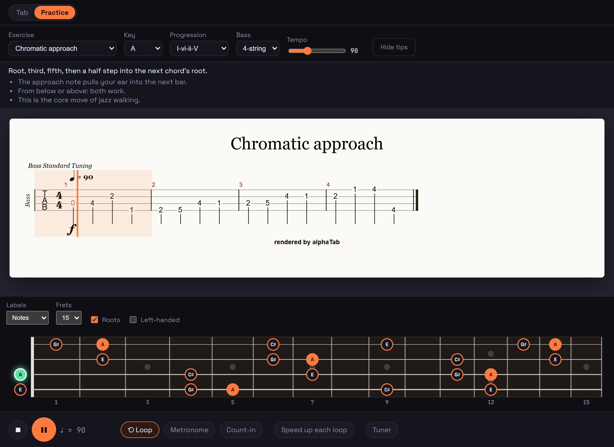

How to use tabShare
Everything in one place. New? Read Your first session and you're ready to play; come back to the rest when you need it. Use the search box to find a feature.
Your first session
- Open the invite link a friend sent you (it looks like
…/#/r/abc123). Type your name and the room password. - Click anywhere once. Browsers keep a page silent until you click it. If you see "Click anywhere to enable sound", that's all it wants. You'll need one click after every reload.
- Pick a song in the 📚 Library on the left, or search for one and click a result to add it for the whole room.
- Press play (or Space). With Jam sync on (the default), everyone in the room plays along together.
- Want to talk? Press 📹 Start call at the top. Use headphones so your speakers don't echo into your mic.

Playing your instrument into the call? See Amp rig (in the browser) or get the desktop app for much lower delay.
Finding your way around a room
Top bar
- Room name + ⧉: copies the invite link to send to friends.
- Colored dots: everyone in the room. Click someone's dot to jump to where they are in the score. A small mark shows who's in jam sync and who's in the call.
- 📹 Start call / Join call and Leave.
Side panel
| 📚 Library | The room's songs. Search, upload, write a tab, remove. |
|---|---|
| 🎚 Tracks | Which parts you see, mute / solo / volume per part, sound bank. |
| 🎸 Rig | Your instrument input, amp model, cab, and (desktop) plugins and room audio. |
| 💬 Chat | Messages with clickable links and previews. Saved with the room. |
Drag the panel's right edge to resize it; « folds it into a thin icon strip. On phones and tablets it becomes a drawer: tap ☰, and swipe left to close it.
Modes
The switch above the score picks what the big area shows: Tab (the song), Practice, Drums or Browser.
Browser, desktop app or phone?
| Browser | Everything except low-latency audio. Chrome or Edge recommended. Needs the https address (camera and mic don't work over plain http). |
|---|---|
| Desktop app | Windows and Mac. Same rooms, plus your audio interface's own driver (ASIO / Core Audio), VST3 plugins, room audio and the shared browser. Setup |
| iPhone / iPad | The app (TestFlight) runs the amp rig natively with a USB interface. The website also works on phones with a touch layout. |
Adding songs
- Search: type an artist or song in the Library's search box, click a result. It's added for the whole room with every track.
- Upload: Guitar Pro (
.gp,.gp5,.gpx…), MusicXML or alphaTex, up to 25 MB. Or drag the file onto the page. MIDI files can't be opened. - Write one: the alphaTex editor lets you type a tab as text.

Switching songs switches them for everyone in the room.
Reading the score
- Zoom − / 100% / + in the song header.
- Layout: Page (rows down the page), Horizontal (one endless row that scrolls sideways), Parchment (bars per row as written in the file).
- Tab only hides standard notation on guitar and bass parts. On by default.
- ☀ Light / ☾ Dark score.
- Songs open on the bass part if there is one. Pick other parts in 🎚 Tracks.
These are all just for you. Other people's cursors, selections and playheads show in their colors, lined up to the same notes even if their screen is a different size.
Keyboard
| Space | Play / pause |
|---|---|
| ← → | Previous / next bar (repeats count) |
| ↑ ↓ | First bar of the previous / next row |
| T | Tap sync, while syncing a YouTube recording |
Keys are ignored while you're typing in a box.
Playback
- Play / Stop, and click any note to jump there.
- Speed slider, 25–150%.
- Metronome and Count-in.
- Loop: drag across some notes to select them, then press Loop: everyone loops that part. With nothing selected, Loop just repeats the whole song for you.
Tracks panel
- Tick a part to show it. M mutes, S solos, the slider sets its volume (double-click resets).
- Sound bank: bigger banks sound better and download once. Phones always use the light one.
Jam sync
On by default. While it's on, play, pause, seeking, speed and the mix (mute, solo, volume, metronome, count-in, Synth/Original) are the same for everyone who has it on. Someone joining late catches up to where you are.
- Turn it off to practice on your own without moving anyone else. Turning it back on picks up the room's current state.
- Same track view as the jam (Tracks panel, on by default): untick it to keep your own view, e.g. you read bass while a friend reads guitar. Mute/solo still sync.
Over the internet everyone hears the others a little late. Jam sync is what keeps you in time: each person plays along to their own copy of the song.
Original recording (YouTube)
Play the real song instead of the synth, following the tab.
- Press Original next to Synth and paste a YouTube link. It's saved with that tab for the room.
- Sync it: play the video and press T on the first beat of every bar. Tapping just bar 1 sets the start; more taps follow tempo changes. Shift all nudges everything earlier or later.
- Now clicking in the tab jumps the video to the same spot, and the cursor follows the recording.
Track mute/solo, metronome and count-in don't apply to a recording, so they're greyed out. The video box can be minimized and dragged anywhere, but YouTube requires it to stay visible.
Video and voice call
Press 📹 Start call. It works best for up to about 4–5 people.

- Mute, camera, screen share and settings (mic, camera, speakers, and "original sound", which turns off noise suppression for instruments).
- 🎚 Mix: set each person's voice and instrument volume separately (0–200%). Remembered per person.
- The 🎤 and 🎸 badges on a tile light up when sound is arriving.
- ⧉ Pop out puts the call in its own window. PiP (Chrome) floats it over other apps. The desktop app shows a small floating box automatically when you switch away.
Wear headphones. If someone can't connect at all, one of you is likely on a strict network (some offices, phone hotspots); try another network.
Chat
💬 in the side panel. Links are clickable and get a preview card. The chat is kept with the room, so people joining later see it.
Browser mode desktop app
Look at the same web page together: pedal listings, a lesson, a gear site. Type an address; with Browse together on, your clicks move everyone and theirs move you. Signing in to sites works, and they never see your tabShare key.
Outside the desktop app you get a card with the shared link to open yourself. The song keeps playing in this mode.
Amp rig
Plug your guitar or bass into an audio interface and play it through an amp model, then send it into the call.
- 🎸 Rig panel → pick your interface and the input your instrument is on. Watch the meter move as you play.
- Model: load a
.namfile, or Browse TONE3000 to sign in and pick a tone. A Capture dropdown lets you try each capture of that tone. - Cab IR (optional): load a
.wavcabinet impulse. - Set input / output gain, tick Hear myself, pick the monitor device.
- Send to call: your instrument goes out as its own sound, next to your voice. Muting your mic doesn't mute the guitar.
In a browser the round trip is around 50–70 ms, which feels laggy to play through. The desktop app gets it to ~10–20 ms.
Desktop app Windows · Mac

Setup
- Download it from the welcome page (or the Rig panel's link) and install.
- On first start it asks for the server address and an API key. Ask whoever runs your server for a key (they make one in Admin → API keys).
- Join rooms the same way as in the browser. Updates install themselves.
Rig in the app
- Uses your interface's own driver: ASIO on Windows, Core Audio on Mac. The panel shows the measured latency.
- Plugins (VST3): add your installed plugins before or after the amp, reorder them, Edit opens the plugin's window, the power button bypasses one. Settings are saved.
Room audio
Desktop apps in the same room hear each other's instruments directly, peer to peer (the same technology as SonoBus), with far less delay and better quality than the call. It connects by itself; the Rig panel's Room audio section shows who's linked, with a volume and buffer per person. Hear the room lets you listen even with your own rig off. Browser users still hear you through the call.
Tuner and fretboard

Tuner (transport bar): uses your rig input if it's on, otherwise your mic. Shows the note and how many cents off.
Fretboard (transport bar): a neck under the score. Pick a tuning (guitar, bass, 4/5/6 strings…), a root and a scale or arpeggio, show note names or intervals, left-handed, 12–24 frets. Follow a track to light up the notes it plays as the song goes.

Practice mode
Switch to Practice above the score. 22 bass exercises (warm-ups, scales, arpeggios, walking lines, grooves) written out as tab in any key and tuning, with the fretboard following each note. Loop, metronome, count-in, and a speed trainer that speeds up a little every time the loop comes round.

Practice is only for you: nobody else hears it. The room's song pauses while you practice and is waiting when you switch back.
Drums mode
A drum machine to play along with. Pick a style (rock, funk, blues shuffle, metal, reggae, jazz…) and a tempo, then build a song from sections: intro, verse, chorus, bridge and so on.
- 🎲 on a section rolls a new beat for just that section. Fills and crashes are added at section changes.
- Loop one section, or play the whole thing.
- Save songs to the room for later. Share with the room (off by default) makes everyone hear and control the same drums.
Troubleshooting
I can't hear the song
Click anywhere on the page once (browsers block sound until you do). Check the track isn't muted or another track soloed in 🎚 Tracks, and that you're on Synth unless a recording is linked.
Jam sync is out of step
Turn jam sync off and on again; it re-adopts the room. If one person reloaded, they need their one click before their sound starts.
Nobody can hear me / I can't hear someone in the call
Check the 🎤 badge lights when you talk, your mic choice in call settings, and their volume in 🎚 Mix. If video never appears for one person, it's usually their network blocking the connection.
Camera or mic don't work at all
Use the https address, and allow camera/mic when the browser asks (the lock icon in the address bar lets you change it).
My guitar sounds late
Expected in a browser. Use the desktop app, and set your interface's buffer as low as it runs cleanly (128 or less).
My USB mic went silent when I turned the rig on (Windows)
Update the desktop app (0.4.0 or later fixed this: it only loads the ASIO driver you pick).
The desktop app asks for a key
Ask the server's admin for an API key. Browsers don't need one, just the room password.
Running the server
For whoever hosts tabShare:
- A fresh server prints a one-time setup code to its log. Open the site, enter it, and create the admin account.
- Admin: create rooms (rooms need the admin by default), change a room's password (this signs everyone in it out), delete rooms, see who's online.
- API keys for desktop apps: one per person, shown once, revocable.
- Settings: public URL (used in invite links), port, TONE3000 key.